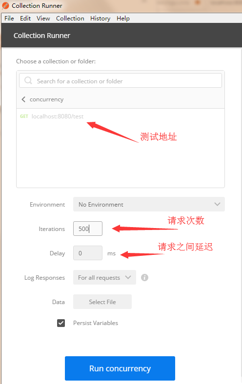
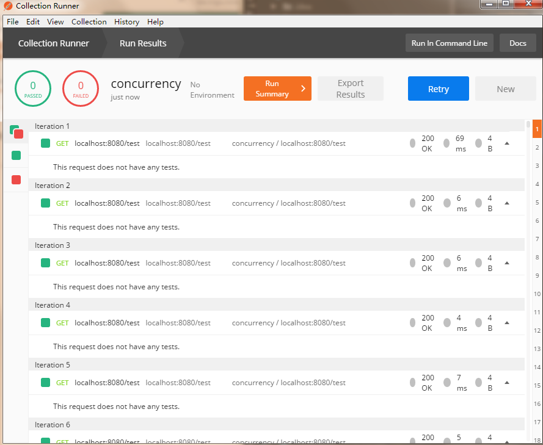
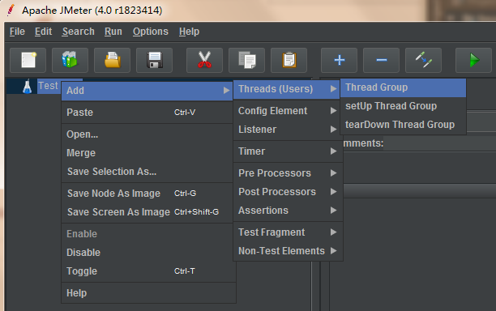
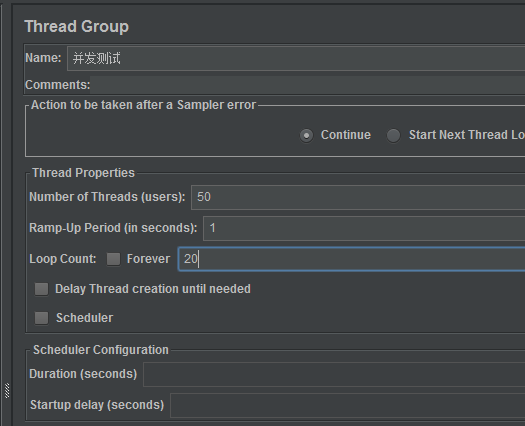
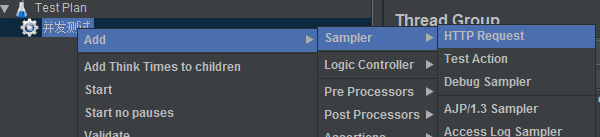
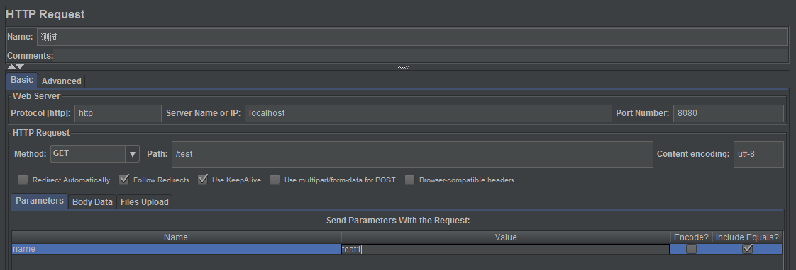
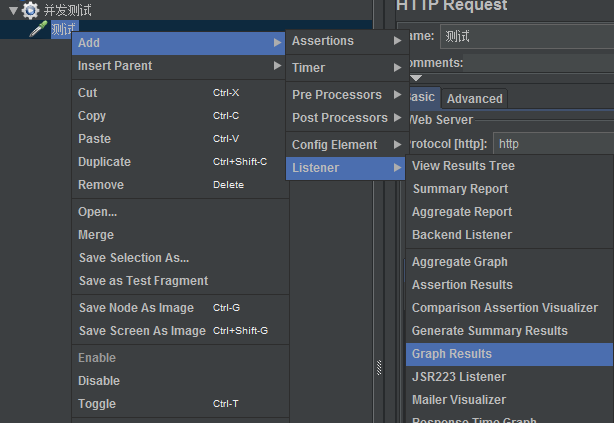
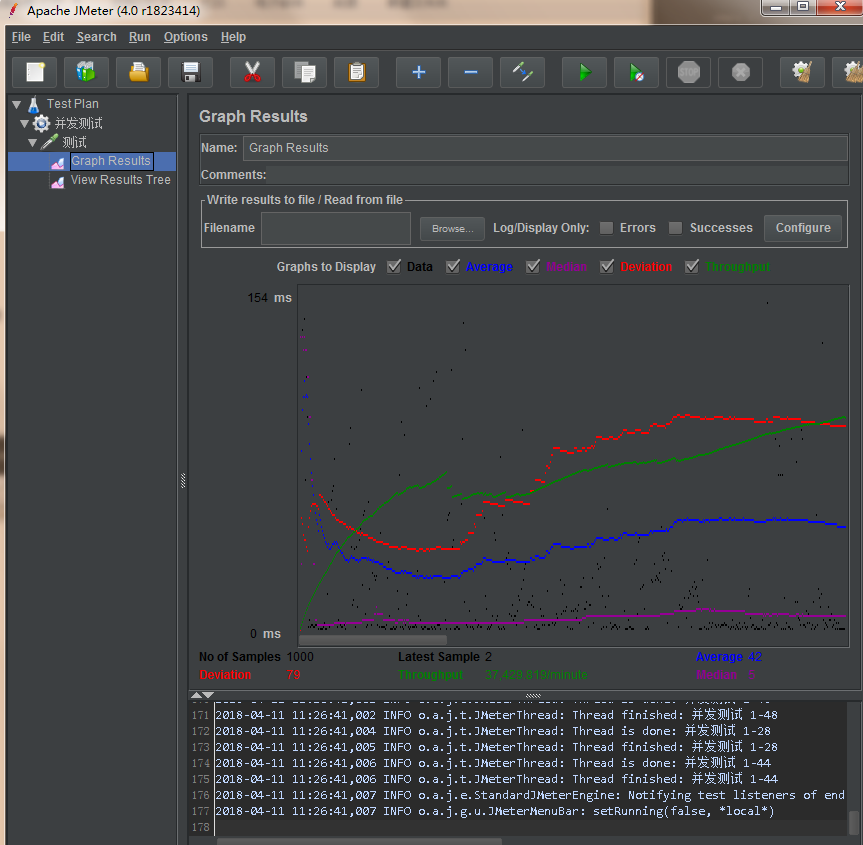
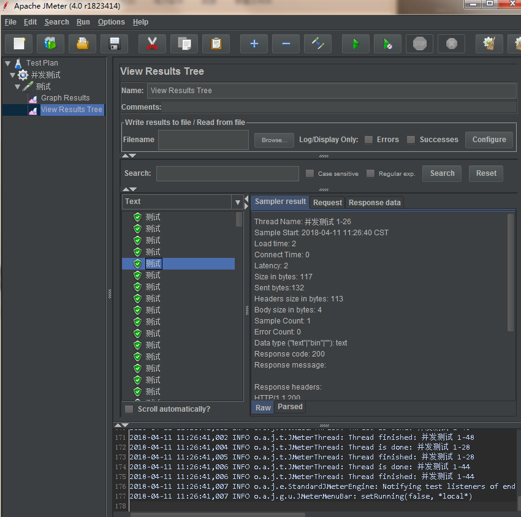
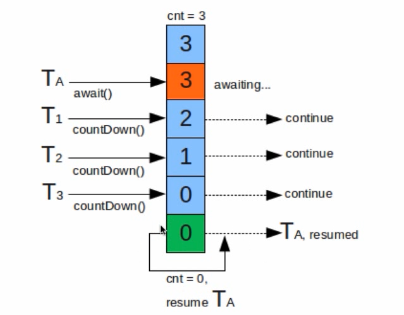

JAVA并发编程与高并发解决方案 - 并发编程 一
JAVA并发编程与高并发解决方案 - 并发编程 一
| 版本 | 作者 | 内容 |
|---|---|---|
| 2018.4.8 | huangz | 首次发布 |
学习内容简介
并发编程知识点
线程安全、线程封闭、线程调度、同步容器、并发容器、AQS、J.U.C etc.
高并发解决方案知识点
扩容、缓存、队列、拆分、服务降级与熔断、数据库切库、分库分表 etc.
面对人群
从事JAVA开发的程序员
- 对并发和高并发不了解的程序员
- 对并发和高并发了解的程序员
- 已经是编程高手的程序员
目的
构建完整的并发与高并发知识体系
- 系统的学习到并发编程的知识及高并发处理思路
- 修正之前在不知不觉中犯过的一些并发方面的问题
- 规避以后开发中一些并发方面的问题
- 对你的知识进行一次更为全面的梳理，完善知识体系
- 学习到大量的实际场景案例分析和代码优化技巧
- 让你对并发编程和高并发处理有一个质的提升
- 将节省你准备面试的时间，让你的面试更有针对性
- 可以借鉴一些之前可能没有想到过的解决问题思路和手段
课程内容安排
基础知识讲解与核心知识准备

并发及并发的线程安全处理

高并发处理的思路及手段

涉及知识技能
总体架构：Spring Boot、Maven、JDK8、MySQL
基础组件：Mybatis、Guava、Lombok、Redis、Kafka
高级组件(类)：Joda-Time、Atomic包、J.U.C、AQS、ThreadLocal、RateLimiter、Hystrix、ThreadPool、shardbatis、curator、elastic-job …
场景举例 - 实现计数功能
1 | import lombok.extern.slf4j.Slf4j; |
点击运行结果，每一次结果都是不一样的，并且没有达到结果为5000，而是小于5000
1 | 4j |
点击运行结果，每一次结果都是不一样的，并且Map.size()没有达到结果为5000，而是小于5000
若上面两个例子中，threadTotal = 1 则会得到我们预期的结果，size() = clientTotal = 5000
总结：当一个线程运行可以得到我们预期的结果，但当多个线程同时进行操作，就会出现并发问题，导致结果异常
@Slf4j
slf4j
对于一个maven项目。首先要在pom.xml中加入以下依赖项：
1 | <dependency> |
- slf4j就是众多接口的集合，它不负责具体的日志实现，只在编译时负责寻找合适的日志系统进行绑定。具体有哪些接口，全部都定义在slf4j-api中。
- slf4j-log4j12是链接slf4j-api和log4j中间的适配器。它实现了slf4j-apiz中StaticLoggerBinder接口，从而使得在编译时绑定的是slf4j-log4j12的getSingleton()方法
- log4j是具体的日志系统。通过slf4j-log4j12初始化Log4j，达到最终日志的输出。
- lombok：一个插件，封装了log的get和set，可以直接使用log来输出日志信息。
@slf4j
如果不想每次都写private final Logger logger = LoggerFactory.getLogger(XXX.class); 可以用注解@Slf4j
引入依赖，使用方式如上场景举例中代码示例
1 | <dependency> |
解决IDEA使用@Slf4j注入后找不到变量log
方式一：
idea中File –> settings –> Plugins –> 点击”Browse repositories” –> 搜索lombok –> Install Lombok Plugins
若插件安装失败，则可以进行以下安装方式
方式二：
去idea官网下载插件 Lombok Plugin ，到下载区，选择合适的版本下载，我的idea版本为2017.1.4，因此选择插件的版本号为0.16-2017.1.4 下载到文件为lombok-plugin-0.16.zip
注：idea任何插件的版本都需要跟idea版本对应，否则会提示安装失败(本人踩过的坑)
安装步骤：解压下载到的zip文件，拷贝解压文件到idea安装目录下的plugins文件下，打开idea中的 plugins > 选择 install plugin from disk > 选择刚刚拷贝进去的文件夹中的jar，即可进行安装，安装完成后需要进行重启。
Lombox
简介：
Lombok项目是一个java库，可以自动插入到您的编辑器和构建工具中，让您的java变得更加精彩。切勿再次写入另一个getter或equals方法。提前访问未来的Java功能val，等等。
除了官方介绍中，并不多相关文章，特意挑了一篇文章中相关内容
lombok 提供了简单的注解的形式来帮助我们简化消除一些必须有但显得很臃肿的 java 代码。特别是相对于 POJO。
简单来说，比如我们新建了一个类，然后在其中写了几个字段，然后通常情况下我们需要手动去建立getter和setter方法啊，构造函数啊之类的，lombok的作用就是为了省去我们手动创建这些代码的麻烦，它能够在我们编译源码的时候自动帮我们生成这些方法。lombok能够达到的效果就是在源码中不需要写一些通用的方法，但是在编译生成的字节码文件中会帮我们生成这些方法，这就是lombok的神奇作用。
虽然有人可能会说IDE里面都自带自动生成这些方法的功能，但是使用lombok会使你的代码看起来更加简洁，写起来也更加方便。
常用的注解
@slf4j、@Setter、@Getter、@NoArgsConstructor(注解在类上：为类提供一个无参的构造方法)、@AllArgsConstructor(注解在类上；为类提供一个全参的构造方法)
1 | //注解在类上：为类提供一个无参的构造方法 |
基础知识讲解与核心知识准备
并发与高并发基本概念
概念
并发：同时拥有两个或者多个线程，如果程序在单核处理器运行，多个线程将交替地换入或者换出内存，这些线程是同时”存在”的，每个线程都处于执行过程中的某个状态，如果运行在多核处理器上，此时，程序中的每个线程都将会分配到一个处理器核上，因此可以同时运行
高并发：高并发（High Concurrency）是互联网分布式系统架构设计中必须考虑的因素之一，它通常指，通过设计保证系统能够同时并行处理很多请求
对比：
并发：多个线程操作相同的资源，保证线程安全，合理使用资源
高并发：服务能同时处理很多请求，提高程序性能；如系统集中收到大量的请求（12306的抢票系统），导致系统在某段时间类执行大量的操作，包括对资源的请求、数据库的操作等等，如果高并发处理不好，不仅仅降低用户的体验度，请求时间变长，同时也可能导致系统宕机，甚至导致OOM（Out Of Memory）异常，如果想要系统适应高并发状态，就要有多个方面进行系统优化，包括硬件、网络、系统架构、开发语言的选取、数据结构的应用、算法的优化等等，这个时候谈论的是如何提供现有程序的性能，对高并发场景提供一些解决方案、手段等等
CPU多级缓存
在多线程并发环境下，如果不采取特殊手段，普通的累加结果很可能是错的。错的原因可能涉及到计算机原理以及JAVA方面的一些知识。
介绍

Main Memory : 主存
Cache : 高速缓存，数据的读取和存储都经过此告诉缓存
CPU Core : CPU核心
Bus : 系统总线
CUP Core 与 Cache 之间有一条快速通道，Main Memory 与 Cache 关联在 Bus 上，同时 Bus 还用于其他组件 的通信，在Cache出现不久后，系统变得更加复杂，Cache与Main Memory中速度的差异拉大，直到加入另一级的Cache，新加入的Cache 比 一级 Cache 更大，但是更慢，由于从加大一级Cache的做法，从经济上是行不通的，所以有了二级Cache，甚至已经有三级 Cache
为什么需要CPU CACHE?
CPU的频率太快了，快到主存跟不上，这样在处理器时钟周期内，CPU常常需要等待主存，浪费资源，这样会使CPU花费很长时间等待数据到来或把数据写入内存。所以Cache的出现，是为了环境CPU和内存之间速度的不匹配问题（结构：CPU - > CACHE - > MEMORY）
CPU CACHE 意义
缓存的容量远远小于主存，因此出现缓存不命中的情况在所难免，既然缓存不能包含CPU所需要的所有数据，那么Cache的存在真的有意义吗?
CPU缓存存在的意义分两点（局部性原理）：
- 时间局部性：如果某个数据被访问，那么在不久的将来它很可能被再次访问
- 空间局限性：如果某个数据被访问，那么与它相邻的数据很快也可能被访问
缓存的工作原理是当CPU要读取一个数据时，首先从缓存中查找，如果找到就立即读取并送给CPU处理；如果没有找到，就用相对慢的速度内存中读取并送给CPU处理，同时把这个数据所在的数据块调入缓存中，可以使得以后对整块数据的读取都从缓存中进行，不必再调用内存。
正是这样的读取机制使CPU读取缓存的命中率非常高（大多数CPU可达90%左右），也就是说CPU下一次要读取的数据90%都在缓存中，大约10%需要从内存读取。
缓存一致性（MESI）
缓存一致性用于保证多个CPU Cache之间缓存共享数据的一致性，定义了Cache Line四种状态，而CPU对Cache的四种操作，可能会产生不一致的状态，因此缓存控制器监听到本地操作和远程操作的时候 ，需要对Cache Line作出相应的修改，从而保证数据在多个缓存之间的一致性
Cache Line ： 是cache与内存数据交换的最小单位，根据操作系统一般是32byte或64byte。在MESI协议中，状态可以是M、E、S、I，地址则是cache line中映射的内存地址，数据则是从内存中读取的数据。
MESI其实是四种状态的缩写：M（modify）修改、E（exclusive）独占、S（shared）共享、I（invalid）失效。
状态间的相互转换关系：
| M | E | S | I | |
|---|---|---|---|---|
| M | × | × | × | √ |
| E | × | × | × | √ |
| S | × | × | √ | √ |
| I | √ | √ | √ | √ |
Cache 操作： MESI协议中，每个cache的控制器不仅知道自己的操作（local read和local write），通过监听也知道其他CPU中cache的操作（remote read和remote write）。对于自己本地缓存有的数据，CPU仅需要发起local操作，否则发起remote操作，从主存中读取数据，cache控制器通过总线监听，仅能够知道其他CPU发起的remote操作，但是如果local操作会导致数据不一致性，cache控制器会通知其他CPU的cache控制器修改状态。
乱序执行优化
处理器为提高运算速度而做出违背代码原有顺序的优化
举个例子：
- 计算 a b ，a =10 ，b = 200 ，则 result = a b = 2000
- 代码编写顺序：a=10 -> b=200 -> result = a * b
CPU乱序执行优化可能会发生执行顺序为：b=200 -> a=10 -> result = a * b
CPU乱序执行优化不会对结果造成影响，在单核时代，处理器保证做出的优化，不会导致执行的结果远离预期的目标，但是在多核环境下并非如此。首先在多核环境中，同时会有多个核执行指令，每个核的指定都可能会被乱序优化，另外，处理器还引用了L1、L2等缓存机制，没个核都有自己的缓存，这就导致了逻辑次序上后写入内存的数据，未必真的最后写入，最终带来了这样的一个问题：如果我们不做任何防护措施，处理器最终得到的结果和我们逻辑得出的结果大不相同。比如我们在其中的一个核中执行数据写入操作，并在最后写一个标记，用来标记数据已经准备好了，然后从另外一个核上，通过那个标志，来判断数据是否已经就绪，这种做法它就存在一定的风险，标记位先被写入，但数据操作并未完成（可能是计算为完成、也可能是数据没有从缓存刷新到主存当中）， 最终导致另外的核使用了错误的数据。
Java 内存模型（Java Memory Model，JMM）
CPU缓存一致性和乱序执行优化，在多核多并发下，需要额外做很多的事情，才能保证程序的执行，符合我们的预期。那么JVM（Java Virtual Machine (Java虚拟机)）是如何解决这些问题的?为了屏蔽掉各种硬件和操作系统的内存访问差异，实现让Java程序在各种平台下都能达到一致的并发效果，JMV规范中定义了JMM （Java Memory Model (Java 内存模型)）。 JMM是一种规范，它规范了JVM与计算机内存是如何协同工作的，它规定一个线程如何和何时可以看到其他线程修改过的共享变量的值，以及在必须时如何同步的访问共享变量。
JVM内存分配概念

JVM内存分配的两个概念：Stack（栈）和Heap（堆）。
Java中的Heap是运行时数据区，由垃圾回收负责，它的优势是动态的分配内存大小，生存期也不必事先告诉编 译器，在运行时动态分配内存，Java的垃圾收集器，会自动回收不再使用的数据。但是也有缺点，由于是要在运行时动态分配内存，因此存取速度相对较慢。
Java中的Stack优势是存取速度比Heap要快，仅次于计算机中的寄存器，栈中的数据是可以共享的，但是它的缺点是，存在栈中数据的大小和生存期必须是确定的，缺乏灵活性，主要存放一些基本类型的变量。
JMM要求调用栈和本地变量存放在线程栈中，对象存放在堆上。一个本地变量可能指向一个对象的引用，引用这个本地变量是存放在线程栈上，而对象本身是存放在堆上的。一个对象可能包含方法，这些方法可能包含本地变量，这些本地变量还是存放在线程栈中，即使这些方法所属的对象存放在堆上。一个对象的成员变量可能会随着这个对象自身存放在堆上，不管这个成员对象是原始类型还是引用类型，静态成员变量跟随着类的定义一起存放在堆上。存放在堆上的对象，可以被所持有对这个对象引用线程的访问。
当一个线程可以访问一个对象的时候，它也可以访问该对象的成员变量，如果两个线程同时调用同一个对象的同一个方法，将会都访问该对象的成员变量，但是每一个线程都拥有了这个成员变量的私有拷贝。
计算机内存硬件架构

CPU，一台现代计算机拥有两个或多个CPU，其中一些CPU还有多核，从这一点可以看出，在一个有两个或多个CPU的现代计算机上，同时运行多个线程是非常有可能的，而且每个CPU在某一个时刻，运行一个线程是肯定没有问题的，这意味着，如果Java程序是多线程的，在Java程序中，每个CPU上一个线程是可能同时并发执行的。
CPU Refisters（寄存器），每个CPU都包含一系列的寄存器，它们是CPU内存的基础，CPU在寄存器中执行操作的速度远大于在主存上执行的速度，这是因为CPU访问寄存器的速度远大于主存。
Cache（高速缓存），由于计算机的存储设备与处理器运算速度之间有着几个数量级的差距，所以现代计算机系统都不得不加入一层读写速度尽可能接近处理器运算速度的高级缓存来作为内存与处理器之间的缓冲，将运算需要使用到的数据复制到缓存中，让运算能快速的进行，当运算结束后，在从缓存同步到内存中。这样处理器就无需等待缓慢的内存读写，CPU访问缓存层的速度快于访问主存的速度，但通常比访问内部寄存器的速度要慢。
Main Memory（主存），随机存取存储器（random access memory，RAM）又称作“随机存储器”，一个计算机包含一个主存，所有的CPU都可以访问主存，主存通常比CPU中的缓存大得多。
JVM 与 Computer

JVM 与 Computer 内存架构存在差异，硬件内存并无区分栈与堆，对于硬件而言，所有的栈和堆都分布在主内存中，可能会出现在高速缓存、寄存器中。
内存模型抽象结构

Java内存模型 - 同步八种操作
- lock（锁定）：作用于主内存的变量，把一个变量标识为一条线程独占状态
- unlock（解锁）：作用于主内存的变量，把一个处于锁定状态的变量释放出来，释放后的变量才可以被其他线程锁定
- read（读取）：作用于主内存的变量，把一个变量值从主内存传输到线程的工作内存中，以便随后的load动作使用
- load（载入）：作用于工作内存的变量，它把read操作从主内存中得到的变量值存放工作内存的变量副本中
- use（使用）：作用于工作内存的变量，把工作内存中的一个变量值传递给执行引擎
- assign（赋值）：作用于工作内存的变量，它把一个从执行引擎接收到的值赋值给工作内存的变量
- store（存储）：作用于工作内存的变量，把工作内存中的一个变量的值传递到主内存中，以便随后的write的操作
- write（写入）：作用于主内存的变量，它把store操作从工作内存中的一个变量的值传送到主内存的变量中
Java内存模型 - 同步规则
- 如果要把一个变量从主内存中复制到工作内存，就需要按顺序地执行read和load操作，如果把变量从工作内存中同步回主内存中，就要按顺序地执行store和write操作，但Java内存模型只要求上述操作必须按顺序执行，而没有保证是连续执行
- 不允许read和load、store和write操作之一单独出现
- 不允许一个线程丢弃它的最近assign的操作，即变量在工作内存中改变了之后必须同步到主内存中
- 不允许一个线程无原因地（没有发生过任何assign操作）把数据从工作内存同步回主内存中
- 一个新的变量只能在主内存中诞生，不允许在工作内存中直接使用一个未被初始化（load或assign）的变量。即就是对一个变量实施use和store操作之前，必须先执行过了assign和load操作
- 一个变量在同一时刻只允许一条线程对其进行lock操作，但lock操作可以被同一条线程重复执行多次，多次与执行lock后，只有执行相同次数的unlock，变量才会被解锁。lock和unlock必须成对出现
- 如果一个变量执行lock操作，将会清空工作内存中此变量的值，在执行引擎使用这个变量前需要重新执行load或assign操作初始化变量的值
- 如果一个变量事先没有被lock操作锁定，则不允许对它执行unlock操作；也不允许去unlock一个被其他线程锁定的变量
- 对一个变量执行unlock操作之前，必须先把变量同步到主内存中（执行store和write操作）
Java 内存模型 - 同步操作与规则

并发的优势与风险

并发编程与线程安全
代码所在的进程，有多个线程同时运行，而这些线程可能会同时运行同一段代码，如果每次运行结果和单线程预期结果一致，变量值也和预期一致，则认为这是线程安全的。简单的说，就是并发环境下，得到我们期望正确的结果。对应的一个概念就是线程不安全，就是不提供数据访问保护，有可能出现多个线程，先后更改数据，造成所得到的数据是脏数据，也可能是计算错误。
环境搭建准备
项目架构
Spring Boot 项目，https://start.spring.io
自定义注解
为方便理解，自定义一些注解，方便理解。
1 | /** |
1 | /** |
1 | /** |
1 | /** |
并发模拟
模拟准备工具介绍
- Postman：Http请求模拟工具
- Apache Bench（AB）：Apache附带的工具，测试网站性能
- JMeter：Apache组织开发的压力测试工具
- 代码模拟：Semaphore、CountDownLatch等
服务准备
1 | ("/test") |
Postman
Postman本身是一个Http模拟工具，在并发上并不是专业的
使用步骤：
- 打开Postman访问
localhost:8080/test，完成一次服务访问 - 找到Collections标签，新建concurrency文件夹，将刚访问的连接Save文件夹中，并点击文件夹进入测试准备
- 配置参数，点击Run Concurrency，成功后查看结果


Apache Bench(AB)
Apache Bench 是 Apache 服务器自带的一个web压力测试工具，简称ab。ab又是一个命令行工具，对发起负载的本机要求很低，根据ab命令可以创建很多的并发访问线程，模拟多个访问者同时对某一URL地址进行访问，因此可以用来测试目标服务器的负载压力。总的来说ab工具小巧简单，上手学习较快，可以提供需要的基本性能指标，但是没有图形化结果，不能监控。
Windows 7 安装
- 首先需要安装Apache服务器，点击下载
- 将下载
httpd-2.4.33-win64-VC15.zip解压 - 配置环境变量，这里为了方便，我没有配置，直接进入bin目录，运行控制台
- 输入ab命名，若出现以下提示则环境准备成功
1 | D:\apache\Apache24\bin>ab |
提示：若启动ab.exe时候，提示缺少某种依赖库，则需要安装该依赖库才可进行启动
运行演示
运行命令：ab -n 1000 -c 50 http://localhost:8080/test
命令解析：-n 请求总次数 -c 并发数 URL地址
1 | D:\apache\Apache24\bin>ab -n 1000 -c 50 http://localhost:8080/test |
JMeter
相对于AB来说，JMeter更加强大。Apache JMeter是Apache组织开发的基于Java的压力测试工具。JMeter 可以用于对服务器、网络或对象模拟巨大的负载，来自不同压力类别下测试它们的强度和分析整体性能。
参考文章：JMeter使用入门
Windows 7 安装
- 进入官网下载
- 将下载后的
apache-jmeter-4.0.zip解压 - 进入解压目录中的bin目录，运行
jmeter.bat
运行演示
创建线程组


Number of Threads(users) : 线程数、虚拟用户数
Ramp-Up Period(in second) : 虚拟用户增长时长。理解：假设现在有一个考勤系统 ，所有的用户都不是同时登陆的，实际使用场景是在某段时间内，用户会陆陆续续的进行考勤，而这个参数大概理解就是这个意思，考勤是从8点40分到9点10分，那么这个参数就是30分钟*60秒，意味着指定用户请求在规定时间内完成请求。
Loop Count : 循环次数，每个虚拟用户循环的次数，如果勾选Forever则会一直进行下去，默认是1
添加请求


为请求添加结果监听：图形结果（Graph Results）与查看结果树（View Results Tree）

结果分析


代码模拟
CountDownLatch
CountDownLatch类位于java.util.concurrent包下，利用它可以实现类似计数器的功能。比如有一个任务A，它要等待其他4个任务执行完毕之后才能执行，此时就可以利用CountDownLatch来实现这种功能了。

假设计数器的值为3，线程A调用await()方法之后，当前线程就进入了等待状态， 之后在其他线程中执行countDown()，计数器就会 - 1 ，该操作线程继续执行，当计数器从3变成0之后，线程A继续执行。
CountDownLatch这个类可以阻塞线程，保证线程在某种特定的条件下，继续执行。
Semaphore
Semaphore翻译成字面意思为 信号量，Semaphore可以阻塞进程并且控制同时访问的线程个数，通过 acquire() 获取一个许可，如果没有就等待，而 release() 释放一个许可。Semaphore其实和锁有点类似，它一般用于控制对某组资源的访问权限。
CountDownLatch与Semaphore在使用时，通常会与线程池配合使用
Semaphore适合控制并发数，CountDownLatch比较适合保证线程执行完后再执行其他处理，因此模拟并发时，使用两者结合起来是最好的。
并发模拟代码实现
1 | 4j |
坚持原创技术分享，您的支持是我前进的动力！